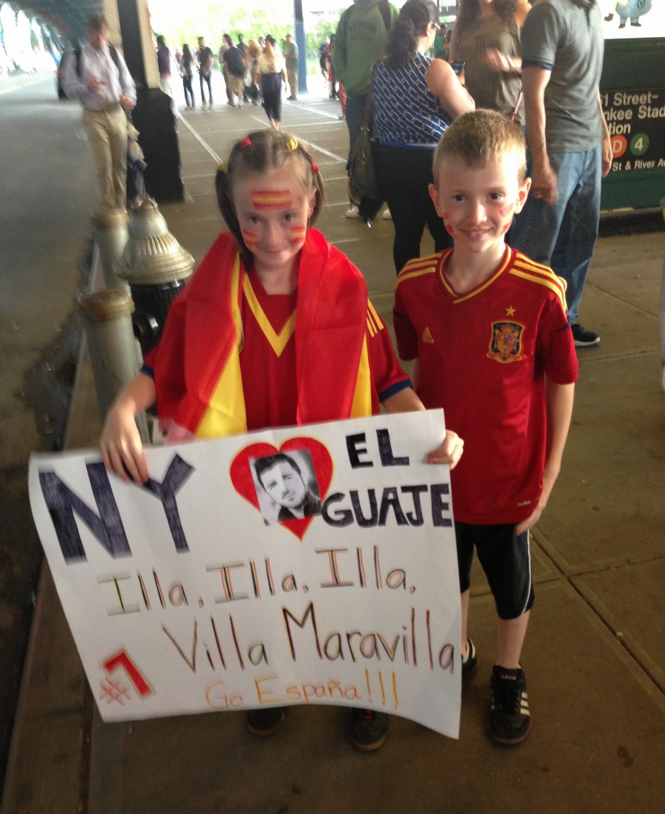

<div class="textcontainer">
<h3>About Me</h3>
<p class="margin"> </p>
<div class="center-row">
<img src="./about-me-placeholder.jpg" alt="placeholder for you about me image">
<p id="aboutme">
My name is Samantha Sestak, and I am a senior in Currier House, majoring in Bioengineering with a secondary focus in Global Health. My academic and professional interests encompass medical device design, infectious disease research, and addressing healthcare inequities. I aspire to bridge the gap between the technologies I develop and the communities they are intended to serve, especially those whose needs are often not considered in the development of healthcare innovations. Originally from Queens, New York, I am the oldest of four. My family shares a random, yet deep, passion for Spanish soccer and culture, and we are devoted FC Barcelona fans—if you want, I can even recite the Catalan anthem from memory for you! Growing up, my brother and I closely followed every La Liga match and participated in La Quiniela, a neighborhood betting game organized by my mother (who, unsurprisingly, won every year). When I’m not playing or watching soccer, you’ll likely find me engrossed in superhero comics, Lord of the Rings trivia, British detective shows, or trying different food spots across New York City.
</p>
</div>
<br></br>
Hello there is more text here, feel free to go into more detail about stuff you are interested in as well. As well as place more
images if you are interested in those things
<br></br>

<br></br>
Maybe even add a video?
<br></br>
<video width="640" height="480" controls>
<source src="temp-video.mp4" type="video/mp4">
</video>
</div>